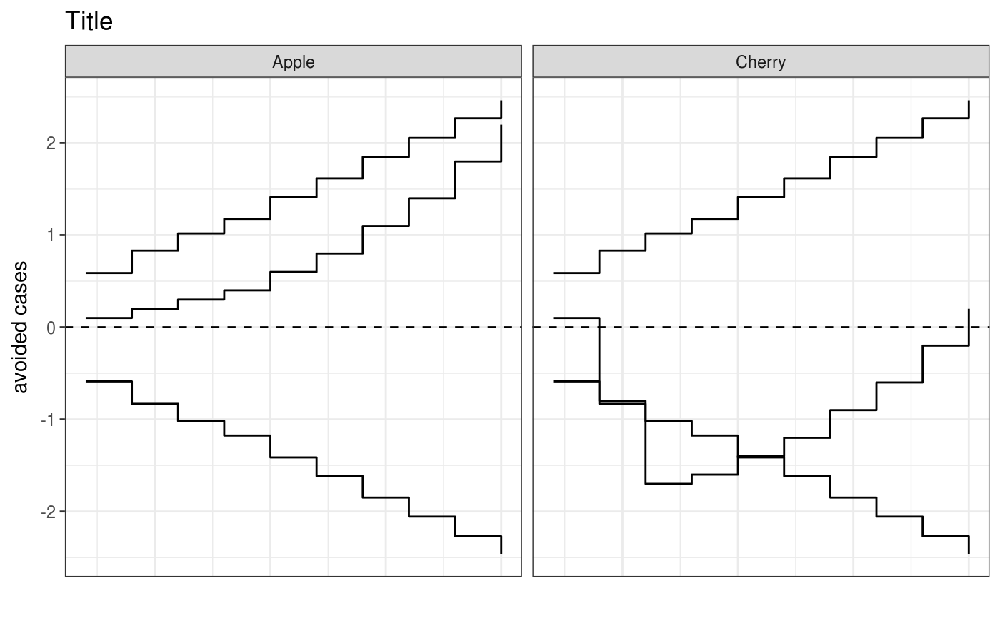

cusumPlot
cusumPlot.Rddisplays a straight-forward CUSUM plot
Arguments
- .data
dataframe containing the Observed, Expected and grouping variable, if any
- O
name of column with observed rate/probability
- E
name of column with expected rate /probability
- group
column with grouping variable used to facet plots
- ylab
y-axis label. default is "Cases Avoided"
- title
plot title. default is blank
Examples
library(dplyr)
#>
#> Attaching package: ‘dplyr’
#> The following objects are masked from ‘package:stats’:
#>
#> filter, lag
#> The following objects are masked from ‘package:base’:
#>
#> intersect, setdiff, setequal, union
library(ggplot2)
oe_data <- data.frame(
O = c(0, 0, 0, 0, 0, 0, 0, 0, 0, 0,
0, 1, 1, 0, 0, 0, 0, 0, 0, 0),
E = c(0.1, 0.1, 0.1, 0.1, 0.2, 0.2, 0.3, 0.3, 0.4, 0.4, 0.1, 0.1,
0.1, 0.1, 0.2, 0.2, 0.3, 0.3, 0.4, 0.4),
group = c(rep("Apple", 10), rep("Cherry", 10))
)
cusumPlot(oe_data, "O", "E", "group", ylab = "avoided cases", title = "Title")
